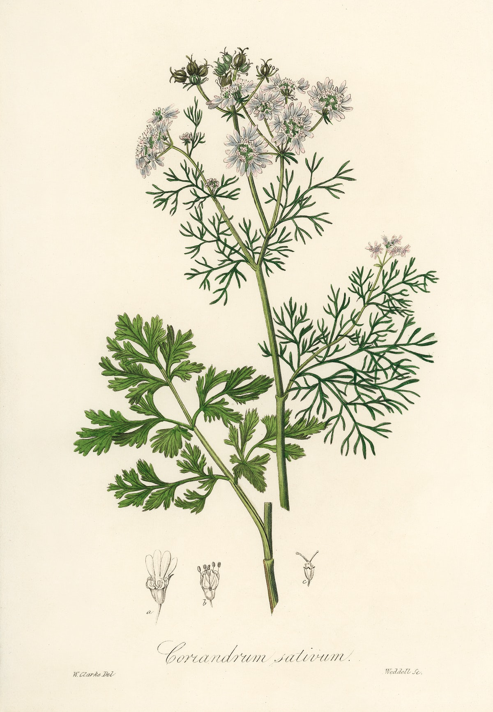
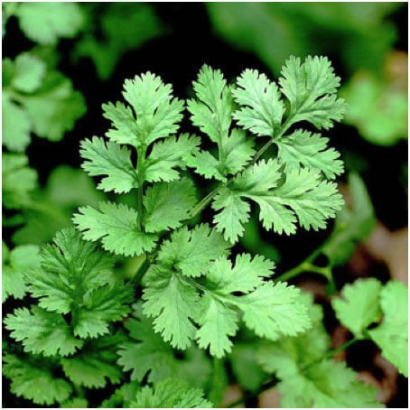
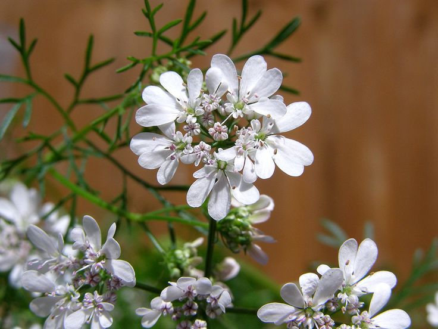

Coriander is a herb that is popular in India,Middle Eastern and Asain dishes. For eaxmple:curries and masalas. Their are many more ways people use coriander. Every single part of the plant is edible .We use the coriander's seeds and dry them up or ground. Coriander is a part of the parsely family. The leaves of the coriander plant is called cilantro. It grows all around the world as a native plant. Such as Europe, Asia, Africa and in the americas.
It's easy to get confused with the 2 spices in Coriander the cilantro vs. coriander. This is confusing probably becauuse both of the spices are found in the same plant. Cilantro is also sometimes called ""Coriander leaves" and "Chinese parsely".
Coriander archaelogical findings go towards cultivation which was by the ancient Egyptions. This also apears to have been cultivated in Greece since no less than the second millennium B.C. In 1670, The plant was finally brought to the Brithish colonies of the North America. The early cultivated the coriander as one of their first spices. Cariander has been useful for digestif aidss dating back all the way back to the 5000 B.C. The evidence to proove that coriander was used that far back in time. It is mentioned in Sanskrit texts, ancient Egyption papuri, The very Old Testament and writtings of the greek physician Hippocrates. Coriander was brought to Europe by The Roman armies. It was used to preserve and keep the meat. The chineese also believed that this plant prevented and counteracted food poisining.
Coriander seeds help reduce blood sugar through increasing enzyme action. This effect is very powerful so people with lower blood sugars should be cautious. When consuming this plant since ite very effective.
The coriander gives many types of anitioxidants, vitamins and minerals. All of which provide significant health benefits for everyone. The leaves and seeds of the coriander plant are rich in vitamin K. This vitamin plays a big role on hellping your blood clots. Vitamin K helps many parts of your body for example: Helps your bones repair, preventing problems such as osteoporosis and finnally vitamin K helps lowering the chances of heart disease.
As you know coriander is full of antioxidants, which are very importants. Since they fight free radicals inside or bodies. What are free radicals? Free radicals are known as loose oxygen molecules that are able to damage your cells. In conclusion they can cause cancer, heart disease ect. Since the anitiocidants in coriander remove free radicals from our bodies, it reduces your chances of having cancer. In addition to lowering signes of aging.
• Vitamin A: Helps feed your retinas system, Helps you keep your eyes moist, Helps to protect your vision. • Vitamin C: Helps your white blood cells for working in order, assists in the absorption of iron. Helps with healing plus increases the production of collagen. • Vitamin K: Helps with our blood clots. • Iron • Calcium
• Calories in totsl are 2. • Protiens contain less then one gram. • Fats are also less then one gram. • Carbohydrates are less then 1 gram. • Fiber is also less then 1 gram. • Sugar is less then 1 gram.
Studies reccomend corriander because it lowers your heart disease risks. For eaxmple: high blood pressure, LDL, cholesterol levels. The extracts of coriander works as a diuretic, which helps your body to flush excess sodium and water. This also might lower your blood pressure. (1) (2) (3)
Inflammation is related to many brain ailments. For example: Parkinson's, Alzheimer's, and multiple sclerosis. The anti-inflammatory properties that coriander contains will safe guard most of these diseases. The mouse study discovered that coriander leaves helps you improve memory which means it might have some applications for Alzheimer's disease. Many animal studies found out that the coriander extract is as powerful as an diazepam, which is a medication for anxiety. For reducing the symptomps of this condition. Coriander also helps manage anxiety. (4) (5) (6) (7)
The oil that is created when you extract the coriander seeds promote healthy digestions. A study was done on 32 people with IBS for 8 whole weeks according to this study they found that 30 drops of a coriander-containing medication. Which should be took atleast 3 times daily it significantly decreases bloating, abdominal pain and discomfort versus the placebo group. COriander iextract is also used in in traditional Iranian medicine as a appetite stimulant.
(8) (9) (10)How does coriander help you fight infections? The plant contains antimicrobial compounds that can help fight certain infections, foodborne ilnesses. Their is a compound in coriander named dodecenal which is significantly able to fight bacteria including salmonella. Salmonella is a big bacteria in the U.S that can cause deadly food poisoning. Currently this bacteria affect 1.2 million people in the United States. One test-tube study shows that coriander seeds which can also be found in many Indian spices which fights the bacteria that plays a big role in urinary tract infections. This how coriander helps you fight some infections.
How can we add this plant into many dishes? The whole Coriandrum sativum plant is edible. The whole seeds formthis plant can be used and added into baked goods, pickled vegetables,rubs,roasted vegetables and cooked lentil dishes. The cilantro which is the leaves of the plant are best used when garnishing soup or use in cold pasta salads, letils,fresh tomato salasa, or thai noodle dishes. another way to use these leaves is to purée them with garlic,peanuts,coconut milk, and lemon juice. To creat a nice paste for meals that that include burritos, salsa, or marinades. These are not all the things you can do with this specific plant every culture and different places in this world use this plant in many way